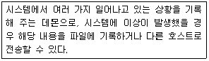
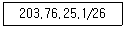
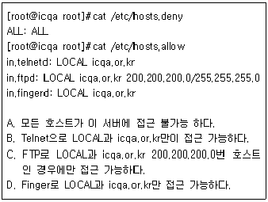

인터넷보안전문가-2급 (2006-05-14 기출문제)
1과목: 정보보호개론
1. SET의 기술구조에 대한 설명으로 옳지 않은 것은?
- SET은 기본적으로 X.509 전자증명서에 기술적인 기반을 두고 있다.
- SET에서 제공하는 인터넷에서의 안전성을 모두 암호화에 기반을 두고 있고, 이 암호화 기술은 제 3자가 해독하기가 거의 불가능하다.
- 암호화 알고리즘에는 공개키 암호 시스템이 사용된다.
- 이 방식은 n명이 인터넷상에서 서로 비밀통신을 할 경우 “n(n-1)/2” 개 키를 안전하게 관리해야 하는 문제점이 있다.
(정답률: 알수없음)

2. 공개키 암호와 관용 암호를 비교한 설명 중 옳지 않은 것은?
- 관용 암호에서는 암호화와 복호화에 동일한 알고리즘이 이용되지만, 공개키 암호에서는 하나의 키는 암호화, 다른 하나는 복호화에 이용하는 알고리즘을 이용한다.
- 관용 암호에서는 키가 절대적으로 비밀이 유지가 되어야 하나, 공개키 암호에서는 두개의 키 중에서 개인 비밀키의 보안이 유지되면 된다.
- 관용 암호의 대표적인 예로 DES, IDEA 등을 들 수 있으며, 공개키 암호의 대표적인 예로 RSA, RC4 등을 들 수 있다.
- 관용 암호의 가장 큰 단점은 계산 시간이 많이 소요된다는 사실이고, 공개키 암호의 가장 큰 단점은 사용이 불편하다는 점이다.
(정답률: 알수없음)
3. 암호 프로토콜 서비스에 대한 설명 중 옳지 않은 것은?
- 비밀성 : 자료 유출의 방지
- 접근제어 : 프로토콜 데이터 부분의 접근 제어
- 무결성 : 메시지의 변조를 방지
- 부인봉쇄 : 송수신 사실의 부정 방지
(정답률: 알수없음)
4. 전자 서명문 생성 시 이용되는 인증서(Certificate)에 대한 설명으로 옳지 않은 것은?
- 근본적으로 사용자의 이름과 공개키를 인증기관의 개인키로 서명한 서명문이다.
- 주체 이름은 일반적으로 X.500 DN(Distinguished Name) 형식을 갖는다.
- 주체 이름을 대신하는 주체 대체 이름으로 사용자 ID, E-mail 주소 및 IP Address, DNS 이름 등이다.
- 인증기관이 한번 발행하면 영원히 취소되지 않는다.
(정답률: 알수없음)
5. 보안 OS(Secure OS)에 대한 설명 중 가장 옳지 않은 것은?
- D1급은 보안에 대한 기능이 없는 것으로, MS-DOS 등이 이에 해당한다.
- C1급은 사용자의 접근제어, Auditing, Shadow Password 등의 부가적인 기능이 제공된다.
- B급의 보안OS는 다단계 보안을 제공하며, 필수적인 접근제어 등이 제공된다.
- A급은 검증된 설계 수준으로서 수학적인 검증 과정이 요구된다.
(정답률: 알수없음)
6. 다음 정보보안과 관련된 행위 중 법률적으로 처벌할 수 없는 행위는?
- 남의 컴퓨터의 공유자원을 열어서 업무와 관련된 자료를 삭제한 행위
- 정부기관의 DB 자료를 임의로 수정한 행위
- 경품 응모 행사 중인 회사의 웹서버 프로그램 허점을 이용, 경품 응모 당첨 확률을 높인 행위
- 컴퓨터 바이러스를 제작하여 소스를 공개한 행위
(정답률: 알수없음)
7. 다음 중 네트워크 보안을 규정하고 있는 국제 위원회는?
- IEEE 802.12
- IEEE 802.4
- IEEE 802.10
- IEEE 802.2
(정답률: 알수없음)
8. 인터넷상에서 시스템 보안 문제는 중요한 부분이다. 보안이 필요한 네트워크 통로를 단일화하여 이 출구를 보안 관리함으로써 외부로부터의 불법적인 접근을 막는 시스템은?
- 해킹
- 펌웨어
- 크래킹
- 방화벽
(정답률: 알수없음)
9. 프로토콜의 역할을 설명한 것 중에서 옳지 않은 것은?
- POP3 : 전자 우편을 보내는 서비스
- FTP : 파일전송 서비스
- NNTP : 인터넷 뉴스 서비스
- HTTP : WWW를 사용하기 위한 서비스
(정답률: 알수없음)
10. 인터넷에서 일어날 수 있는 대표적인 보안사고 유형으로 어떤 침입 행위를 시도하기 위해 일정기간 위장한 상태를 유지하며, 코드 형태로 시스템의 특정 프로그램 내부에 존재 하는 것은?
- 논리 폭탄
- 웜
- 트로이 목마
- 잠입
(정답률: 알수없음)
2과목: 운영체제
11. DNS(Domain Name System) 서버 종류에 속하지 않는 것은?
- Primary Server
- Cache Server
- Expert Server
- Master Name Server
(정답률: 알수없음)
12. Linux 시스템에서 파티션 추가 방법인 “Edit New Partition” 내의 여러 항목에 대한 설명으로 옳지 않은 것은?
- Type - 해당 파티션의 파일 시스템을 정할 수 있다.
- Growable - 파티션의 용량을 메가 단위로 나눌 때 실제 하드 디스크 용량과 차이가 나게 된다. 사용 가능한 모든 용량을 잡아준다.
- Mount Point - 해당 파티션을 어느 디렉터리 영역으로 사용할 것인지를 결정한다.
- Linux 파티션은 NTFS 방식이다.
(정답률: 알수없음)
13. IIS 웹 서버에서 하루에 평균적으로 방문하는 사용자 수를 설정하는 곳은?
- 성능 탭
- 연결 수 제한
- 연결 시간 제한
- 문서 탭
(정답률: 알수없음)
14. Windows 2000 Server의 DNS(Domain Name System) 서비스 설정에 관한 설명으로 옳지 않은 것은?
- 역방향 조회 영역 설정 후 반드시 역방향 조회 영역을 설정해 주어야 한다.
- Windows 2000 Server는 고정 IP Address를 가져야 한다.
- Administrator 권한으로 설정해야 한다.
- 책임자 이메일 at(@)은 마침표(.)로 대체된다.
(정답률: 알수없음)
15. Windows 2000 Sever에서 지원하는 PPTP(Point to Point Tunneling Protocol)에 대한 설명으로 옳지 않은 것은?
- PPTP 헤드 압축을 지원한다.
- IPSec를 사용하지 않으면 터널인증을 지원하지 않는다.
- PPP 암호화를 지원한다.
- IP 기반 네트워크에서만 사용가능하다.
(정답률: 알수없음)
16. Windows 2000 도메인 로그온 할 때 이용되는 절차로 옳지 않은 것은?
- WinLogon
- TAM
- LSA
- SAM
(정답률: 알수없음)
17. 컴퓨터 이름이 “WWW”인 Windows 2000 Server의 특정 파일 접근을, 웹을 통해 접속한 사용자에게만 허용하고자 한다. 권한 수정 설정이 필요한 계정은?
- IUSR_WWW
- guests
- everyone
- administrator
(정답률: 알수없음)
18. RedHat Linux 8.0이 설치되어 있고 모든 파티션은 ext2 파일 시스템을 사용하고 있는 서버에서 /home 디렉터리에 있는 a.txt 파일이 어떤 계정에 의해서도 변경, 삭제, 새 이름으로 저장되지 않도록 하려고 할 경우 다음 중 올바른 명령은?
- chattr -i /home/a.txt
- chattr --i /home/a.txt
- chattr +i /home/a.txt
- chattr --lockfile /home/a.txt
(정답률: 알수없음)
19. Redhat Linux 시스템의 각 디렉터리 설명 중 옳지 않은 것은?
- /usr/X11R6 - X 윈도우의 시스템 파일들이 위치한다.
- /usr/include - C 언어의 헤더 파일
- /boot - LILO 설정 파일과 같은 부팅관련 파일들이 들어있다.
- /usr/bin - 실행 가능한 명령이 들어있다.
(정답률: 알수없음)
20. 현재 Linux 서버에 접속된 모든 사용자에게 메시지를 전송하는 명령은?
- wall
- message
- broadcast
- bc
(정답률: 알수없음)
21. Linux 시스템 명령어 중 디스크의 용량을 확인하는 명령어는?
- cd
- df
- cp
- mount
(정답률: 알수없음)
22. Linux 시스템에서 기본 명령어가 포함되어 있는 디렉터리는?
- /boot
- /etc
- /bin
- /lib
(정답률: 알수없음)
23. “shutdown -r now” 와 같은 효과를 내는 명령은?
- halt
- reboot
- restart
- poweroff
(정답률: 알수없음)
24. Linux 시스템에서 다음의 역할을 수행하는 데몬은?

- inet
- xntpd
- syslog
- auth
(정답률: 알수없음)
25. 서비스 데몬들의 설정파일을 가지고 있는 디렉터리 명은?
- /etc/chkconfig
- /etc/xinetd.d
- /bin/chkconfig
- /bin/xinetd.d
(정답률: 알수없음)
26. RPM(Redhat Package Management)으로 설치된 모든 패키지를 출력하는 명령어는?
- rpm -qa
- rpm -qf /etc/bashrc
- rpm -qi MySQL
- rpm -e MySQL
(정답률: 알수없음)
27. LILO(LInux LOader)에 대한 설명으로 옳지 않은 것은?
- LILO는 일반적으로 Distribution Package에 포함되어 있다.
- Floppy Disk에는 설치할 수 없다.
- Linux 부팅 로더로 Linux 시스템의 부팅을 담당한다.
- LILO는 보통 첫 번째 하드디스크의 MBR에 위치한다.
(정답률: 알수없음)
28. Linux 커널 2.2 시스템에서 마스커레이드(Masquerade) 기능을 이용하여 공인 IP Address를 192.168.0.x의 IP로 공유해서 사용 중이다. 그런데 192.168.0.x를 가진 클라이언트 컴퓨터들이 인터넷에 FTP 접속을 하려면 접속이 되지 않는다. 어떤 명령을 내려야 접속을 가능하게 할 수 있는가?
- 마스커레이드로 IP 공유한 경우는 FTP 접속이 되질 않는다.
- “modprobe ip_masq_ftp”을 입력한다.
- “modprobe ip_masq_raudio”을 입력한다.
- “modprobe ip_masq_ftphttp”을 입력한다.
(정답률: 알수없음)
29. Linux 시스템의 경우 사용자의 암호와 같은 중요한 정보가 /etc/passwd 파일 안에 보관되기 때문에 이 파일을 이용해서 해킹을 하는 경우가 있다. 이를 보완하기 위해서 암호정보만 따로 파일로 저장하는 방법의 명칭은?
- DES Password System
- RSA Password System
- MD5 Password System
- Shadow Password System
(정답률: 알수없음)
30. Linux 시스템 Apache Web Server 설치 시 기존 Apache가 설치되어 있더라도 안전업그레이드 할 수 있는 RPM 옵션은?
- -U
- -u
- -i
- -I
(정답률: 알수없음)
3과목: 네트워크
31. 근거리 통신망 이더넷 표준에서 이용하는 매체 액세스 제어 방법은?
- Multiple Access(MA)
- Carrier Sense Multiple Access(CSMA)
- Carrier Sense Multiple Access/Collision Detection(CSMA/CD)
- Token Passing
(정답률: 알수없음)
32. Biphase 부호 중의 하나로, 동기와 비트 표현을 위하여 비트의 중간에서 신호 천이가 일어나고, 데이터가 '0' 인 경우 비트의 중간에서 Low-to-High 천이가, 데이터가 '1' 인 경우, 비트의 중간에서 High-to-Low 천이가 일어나는 부호는?
- RZ 신호
- NRZ 신호
- 맨체스터 부호
- 차분 맨체스터 부호
(정답률: 알수없음)
33. 프로토콜의 기능 중에서 전송을 받는 개체에서 발송지에서 오는 데이터의 양이나 속도를 제한하는 기능은?
- 흐름 제어
- 에러 제어
- 순서 제어
- 접속 제어
(정답률: 알수없음)
34. 각 허브에 연결된 노드가 세그먼트와 같은 효과를 갖도록 해주는 장비로서 트리 구조로 연결된 각 노드가 동시에 데이터를 전송할 수 있게 해주며, 규정된 네트워크 속도를 공유하지 않고 각 노드에게 규정 속도를 보장해 줄 수 있는 네트워크 장비는?
- Switching Hub
- Router
- Brouter
- Gateway
(정답률: 알수없음)
35. 다음 중 스위치의 특징으로 올바른 것은?
- 스위치는 프레임의 IPX 또는 IP Address를 기반으로 패킷을 포워딩한다.
- 스위치는 패킷의 IP Address만을 기반으로 패킷을 포워딩한다.
- 스위치는 프레임의 MAC Address를 기반으로 패킷을 포워딩 한다.
- 스위치는 프레임의 IP Address를 기반으로 패킷을 포워딩 한다.
(정답률: 알수없음)
36. 인터넷 라우팅 프로토콜로 옳지 않은 것은?
- RIP
- OSPF
- BGP
- PPP
(정답률: 알수없음)
37. OSI 7 Layer에서 암호/복호, 인증, 압축 등의 기능이 수행되는 계층은?
- Transport Layer
- Datalink Layer
- Presentation Layer
- Application Layer
(정답률: 알수없음)
38. 아래 내용에 해당하는 서브넷 마스크 값은?

- 255.255.255.192
- 255.255.255.224
- 255.255.255.254
- 255.255.255.0
(정답률: 알수없음)
39. IP Address에 관한 설명 중 가장 옳지 않은 것은?
- IP Address는 32bit 구조를 가지고 A, B, C, D의 네 종류의 Class로 구분한다.
- 127.0.0.1은 루프 백 테스트를 위한 IP Address라고 할 수 있다.
- B Class는 중간 규모의 네트워크를 위한 주소 Class로 네트워크 ID는 129~191 사이의 숫자로 시작한다.
- C Class는 소규모의 네트워크를 위한 Class로 네트워크 당 254개의 호스트만을 허용한다.
(정답률: 알수없음)
40. 'A'사의 네트워크는 네 개의 서브넷으로 이루어져 있다. 네트워크 관리자의 부담을 최소화 하면서 모든 서브넷에 대한 브라우징 환경을 구성하기 위한 적절한 방법은?
- LMHOSTS 파일을 사용한다.
- DNS 서버를 설치한다.
- WINS 서버를 설치한다.
- HOSTS 파일을 이용한다.
(정답률: 알수없음)
41. IP Address의 부족과 Mobile IP Address 구현문제로 차세대 IP Address인 IPv6가 있다. IPv6는 몇 비트의 Address 필드를 가지고 있는가?
- 32 비트
- 64 비트
- 128 비트
- 256 비트
(정답률: 알수없음)
42. SNMP(Simple Network Management Protocol)에 대한 설명으로 옳지 않은 것은?
- RFC(Request For Comment) 1157에 명시되어 있다.
- 현재의 네트워크 성능, 라우팅 테이블, 네트워크를 구성하는 값들을 관리한다.
- TCP 세션을 사용한다.
- 상속이 불가능하다.
(정답률: 알수없음)
43. 인터넷에 접속된 호스트들은 인터넷 주소에 의해서 식별되지만 실질적인 통신은 물리적인 MAC Address를 얻어야 통신이 가능하다. 이를 위해 인터넷 주소를 물리적인 MAC Address로 변경해 주는 프로토콜은?
- IP(Internet Protocol)
- ARP(Address Resolution Protocol)
- DHCP(Dynamic Host Configuration Protocol)
- RIP(Routing Information Protocol)
(정답률: 알수없음)
44. TCP와 UDP의 차이점을 설명한 것 중 옳지 않은 것은?
- TCP는 전달된 패킷에 대한 수신측의 인증이 필요하지만 UDP는 필요하지 않다.
- TCP는 대용량의 데이터나 중요한 데이터 전송에 이용 되지만 UDP는 단순한 메시지 전달에 주로 사용된다.
- UDP는 네트워크가 혼잡하거나 라우팅이 복잡할 경우에는 패킷이 유실될 우려가 있다.
- UDP는 데이터 전송 전에 반드시 송수신 간의 세션이 먼저 수립되어야 한다.
(정답률: 알수없음)
45. TCP/IP 응용 계층 프로토콜에 대한 설명으로 올바른 것은?
- Telnet은 파일 전송 및 접근 프로토콜이다.
- FTP는 사용자 TCP 연결을 설정한 후 다른 서버에 로그인하여 사용할 수 있도록 하는 프로토콜이다.
- MIME는 전자우편 전송 시 영어 이외의 언어나 영상, 음성 등의 멀티미디어 데이터를 취급할 수 있도록 지원하는 프로토콜이다.
- SMTP는 단순한 텍스트 형 전자우편을 임의의 사용자로부터 수신만 해주는 프로토콜이다.
(정답률: 알수없음)
4과목: 보안
46. Windows 계열의 Imhost 명령을 이용한 해킹을 방지하는 가장 최선의 방법은?
- 윈도우 로그인 항목에 사용자 이름과 암호를 반드시 입력하고 수시로 변경한다.
- 공유항목을 모두 제거하거나 필요할 경우 공유 항목에 반드시 암호를 입력해둔다.
- 네트워크의 IP Address를 DHCP 서버로 할당을 받거나 자주 변경한다.
- 기본 네트워크 로그온을 Microsoft 네트워크 클라이언트에서 “Windows 패밀리 로그온”으로 바꾼다.
(정답률: 알수없음)
47. SYN Flooding Attack에 대한 대비 방법으로 가장 올바른 것은?
- Backlog Queue 크기 조절
- Firewall에서 Syn Packet에 대한 거부 설정
- OS 상에서 Syn Packet에 대한 거부 설정
- OS Detection을 할 수 없도록 Firewall 설정
(정답률: 알수없음)
48. WU-FTP 서버에서 특정 사용자의 FTP 로그인을 중지시키기 위해서 설정해야할 파일은?
- ftpcount
- ftpwho
- hosts.deny
- ftpusers
(정답률: 알수없음)
49. TCP_Wrapper의 기능으로 옳지 않은 것은?
- inetd에 의하여 시작되는 TCP 서비스들을 보호하는 프로그램으로써 inetd가 서비스를 호출할 때 연결 요청을 평가하고 그 연결이 규칙에 적합한 정당한 요청인지를 판단하여 받아들일지 여부를 결정한다.
- 연결 로깅과 네트워크 접근제어의 주요 기능을 주로 수행한다.
- TCP_Wrapper 설정 점검 명령어는 tcpdchk와 tcpmatch등이 있다.
- iptables이나 ipchains 명령을 이용하여 설정된다.
(정답률: 알수없음)
50. 다음 TCP_Wrapper의 내용으로 가장 올바른 것은?

- A, C
- B, D
- A, B, C
- B, C, D
(정답률: 알수없음)
51. 다음 중 string.h 내의 함수 strcpy(), strncpy()에 대한 버퍼 오버 플로우의 취약성에 대한 설명으로 올바른 것은? (복사할 위치 : 목적배열, 복사할 내용이 담긴 위치 : 대상배열)
- 목적 배열의 크기가 너무 클 때 버퍼 오버 플로우가 발생한다.
- 취약성 제거를 위해 strcpy함수를 사용하기 전 대상 배열에 특정 내용이 없는지 확인한다.
- strncpy 함수는 strcpy 함수에 비해 버퍼 오버 플로우에 조금 더 안전하다.
- strcpy 함수에서 에러가 발생하더라도 프로그램이 지속적으로 동작할 수 있는 방안을 강구한다.
(정답률: 알수없음)
52. 방화벽의 세 가지 기본 기능으로 옳지 않은 것은?
- 패킷 필터링(Packet Filtering)
- NAT(Network Address Translation)
- VPN(Virtual Private Network)
- 로깅(Logging)
(정답률: 알수없음)
53. 다음 보기 중에서 Screening Router에 대한 설명으로 가장 옳지 않은 것은?
- OSI 참조 모델의 3, 4계층에서 동작한다.
- IP, TCP, UDP 헤더 내용을 분석한다.
- 패킷내의 데이터에 대한 공격 차단이 용이하다.
- Screening Router를 통과 또는 거절당한 패킷에 대한 기록관리가 어렵다.
(정답률: 알수없음)
54. DoS(Denial of Service)의 개념으로 옳지 않은 것은?
- 다량의 패킷을 목적지 서버로 전송하여 서비스를 불가능하게 하는 행위
- 로컬 호스트의 프로세스를 과도하게 fork 함으로서 서비스에 장애를 주는 행위
- 서비스 대기 중인 포트에 특정 메시지를 다량으로 보내 서비스를 불가능하게 하는 행위
- 익스플로러를 사용하여 특정권한을 취득하는 행위
(정답률: 알수없음)
55. TCP 프로토콜의 3-Way Handshake 방식을 이용한 접속의 문제점을 이용하는 방식으로, IP 스푸핑 공격을 위한 사전 준비 단계에서 이용되는 공격이며, 서버가 클라이언트로부터 과도한 접속 요구를 받아 이를 처리하기 위한 구조인 백 로그(Back Log)가 한계에 이르러 다른 클라이언트로부터 오는 새로운 연결 요청을 받을 수 없게 하는 공격은?
- SYN Flooding
- UDP 폭풍
- Ping Flooding
- 자바애플릿 공격
(정답률: 알수없음)
56. 다음 중 방화벽 적용 방식으로 옳지 않은 것은?
- Gateway Filtering Firewall
- Packet Filtering Firewall
- Application Gateway Firewall
- Hybrid Firewall
(정답률: 알수없음)
57. 분산 서비스 거부 공격은 대역폭 공격과 애플리케이션 공격으로 나뉜다. 각각에 대한 설명으로 옳지 않은 것은?
- 대역폭 공격은 엄청난 양의 패킷을 전송해서 네트워크의 대역폭이나 장비 자체의 리소스를 모두 소진시킨다.
- 대역폭 공격의 대표적인 공격은 패킷 오버플로 공격이다.
- 애플리케이션 공격은 HTTP와 같은 정상 서비스에 반복 접속하고, 잘못된 연산을 감지하여 시스템을 장악하는 방법이다.
- 애플리케이션 공격의 대표적인 공격은 HTTP Half-Open Attack과 HTTP Error Attack이다.
(정답률: 알수없음)
58. SSL(Secure Socket Layer)의 설명 중 옳지 않은 것은?
- SSL에서는 키 교환 방법으로 Diffie_Hellman 키 교환방법만을 이용한다.
- SSL에는 Handshake 프로토콜에 의하여 생성되는 세션과 등위간의 연결을 나타내는 연결이 존재한다.
- SSL에서 Handshake 프로토콜은 서버와 클라이언트가 서로 인증하고 암호화 MAC 키를 교환하기 위한 프로토콜이다.
- SSL 레코드 계층은 분할, 압축, MAC 부가, 암호 등의 기능을 갖는다.
(정답률: 알수없음)
59. 인터넷 환경에서 침입차단시스템에 대한 설명 중 옳지 않은 것은?
- 인터넷의 외부 침입자에 의한 불법적인 침입으로부터 내부 망을 보호하기 위한 정책 및 이를 구현한 도구를 총칭한다.
- 보안 기능이 한곳으로 집중화 될 수 있다.
- 내부 사설망의 특정 호스트에 대한 액세스 제어가 가능하다.
- 네트워크 계층과 트랜스포트 계층에서 수행되는 패킷 필터링에 의한 침입차단시스템만이 존재한다.
(정답률: 알수없음)
60. 암호 프로토콜로 가장 옳지 않은 것은?
- 키 교환 프로토콜
- 디지털 서명
- PKI
- DAS
(정답률: 알수없음)